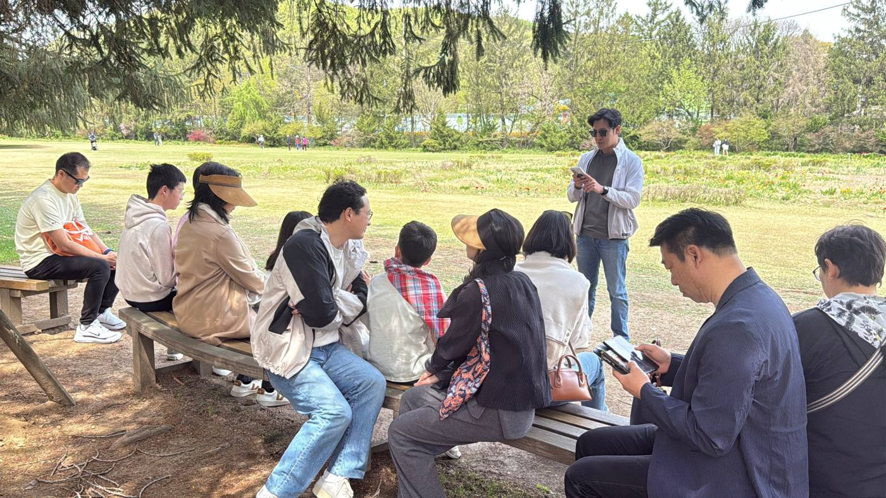

최근 설교
| 2026년 10월 25일 | 겉과 속 (1) · 요나서 3장 1-4절 (최형규 목사) |
|---|---|
| 2026년 10월 18일 | 어떤 안경을 쓰고 계십니까? · 야고보서 2장 10-13절 (우희영 목사) |
| 2026년 10월 11일 | 한 얼굴로 삽시다 · 야고보서 2장 1-4절 (우희영 목사) |
| 2026년 10월 4일 | 어떻게 셈하고 계십니까? · 야고보서 1장 19-27절 (우희영 목사) |
설교 영상은 유튜브 채널에서 보실 수 있습니다.
공동체 소식
